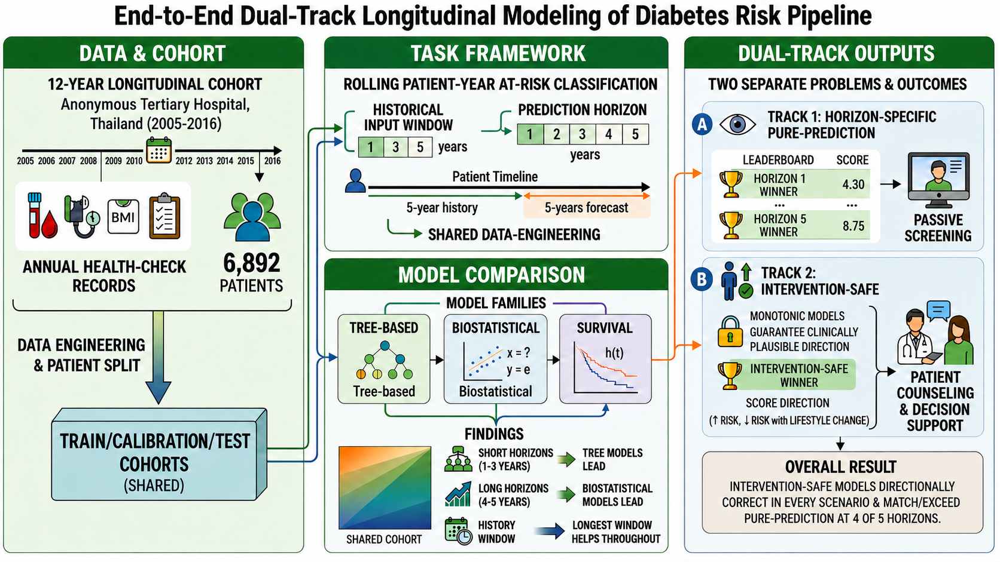
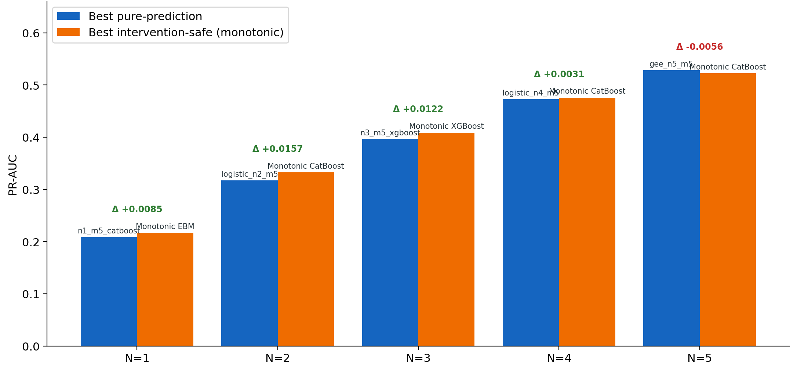

A Pure-prediction track
Optimize the screening comparison.
Biostatistical, tree-based, and survival models compete on future at-risk classification. PR-AUC is the primary ranking metric, with ROC-AUC and Brier score providing additional context.
IEEE HealthCom 2026 / Research paper
One longitudinal foundation for two distinct tasks: ranking future risk and scoring favorable what-if changes.
01 / Overview
Effective diabetes prevention relies on identifying metabolic risk during the pre-diagnostic window, yet existing prediction tools typically fix a single forecast horizon and often assume a single model can serve both population screening and patient counseling. This work introduced an end-to-end longitudinal diabetes-risk modeling pipeline developed from 12 years of annual health-check data from 6,892 patients at a tertiary hospital in Thailand (2005–2016).
We framed the task as a rolling patient-year classification, explicitly varying the prediction horizon (1 to 5 years) and historical input windows (1, 3, or 5 years) across biostatistical, tree-based, and survival model families. Our benchmarks revealed that no single model family dominated: tree-based models led at short horizons and biostatistical models at longer ones. Importantly, we demonstrated that ranking future risk and patient-facing what-if scoring were distinct operational tasks.
To address this, we proposed a dual-track framework: a horizon-specific pure-prediction track for passive screening, and an “intervention-safe” monotonic track designed for patient-facing what-if simulations. The intervention-safe models preserved clinically plausible score directions under tested lifestyle-improvement scenarios while matching or exceeding pure-prediction performance at horizons up to four years. Across horizons the leading models reached ROC-AUC 0.80–0.83 with rank-1 PR-AUC lifts of 3.2–5.4× over the prevalence baseline, and patient-clustered bootstrap confidence intervals showed the tree and biostatistical leaders to be statistically indistinguishable at every horizon. This dual-track architecture bridged the gap between passive risk stratification and actionable clinical decision support. Code is publicly available at the project repository.
02 / Method
Annual health checks become rolling prediction occasions, with explicit control of how far to look back and how far to predict.
Use source-year records before first at-risk onset. The outcome combines pre-diabetes and diabetes, defined by cumulative maximum fasting blood sugar above 100 mg/dL.
Five horizons (N = 1–5) and three history windows (M = 1, 3, 5) yield 15 modeling tables from the same longitudinal cohort.
A patient-level 60/20/20 train/calibration/test split and shared test-row intersection align comparisons across model families.

A Pure-prediction track
Biostatistical, tree-based, and survival models compete on future at-risk classification. PR-AUC is the primary ranking metric, with ROC-AUC and Brier score providing additional context.
B Intervention-safe track
Monotonic models are tested under lifestyle-improvement presets such as lower sugary-drink intake, more activity, and lower BMI. All benchmarked monotonic families passed the specified directional check.
03 / Published results
The paper compares 28 configurations per horizon on identical test occasions. Monotonic leaders reach or exceed the screening frontier at horizons one through four.
1-year forecast · 5-year history
+0.0085 paper-reported PR-AUC difference
| Horizon | Screening leader | PR-AUC | Monotonic leader | PR-AUC | Prevalence |
|---|---|---|---|---|---|
| 1 year | CatBoost | 0.2085 | EBM | 0.2170 | 3.86% |
| 2 years | Logistic | 0.3169 | CatBoost | 0.3326 | 7.07% |
| 3 years | XGBoost | 0.3964 | XGBoost | 0.4087 | 10.27% |
| 4 years | Logistic | 0.4727 | CatBoost | 0.4758 | 13.46% |
| 5 years | GEE | 0.5282 | CatBoost | 0.5226 | 16.49% |
Values and differences follow the paper’s reporting precision; differences and lifts were calculated before rounding. PR-AUC should be read against each horizon’s prevalence baseline.
The 95% patient-clustered bootstrap interval for the best tree versus best statistical model includes zero at every horizon (2,000 replicates). A nominal first-place ranking does not establish a significant advantage.

Paper results and current code. This page reports the camera-ready paper’s values. Software versions can affect current scores and ranks, including the three-year XGBoost result. See the validation notes and known differences when comparing a new run.
04 / Interpretation
Data come from a single tertiary hospital in Thailand. External, multi-site validation is needed before generalizability can be established.
Irregular follow-up and informative missingness can bias evaluation. The shared cohort favors more complete prediction occasions; lifestyle responses are assumed time invariant.
Monotonic what-if scores preserve specified feature directions under tested scenarios. They do not estimate the causal benefit of a lifestyle intervention.
Care environments and population characteristics can shift over time. Models used beyond the training period require monitoring and periodic recalibration or retraining.
05 / Resources
The official IEEE publication link will be added when the paper is publicly available.
Official publication link forthcoming
HealthCom workflow and thesis supplements
Targets, splits, commands, and implementation details
The patient cohort is private and is not distributed. The repository includes the implementation and wholly synthetic examples; reproducing the study’s numerical results requires the original cohort.
Reference
@inproceedings{khlaisamniang2026dualtrack,
title = {Dual-Track Longitudinal Modeling of Diabetes Risk:
Horizon-Specific Screening and Intervention-Safe Scoring},
author = {Khlaisamniang, Pitikorn and Chaiteerakij, Roongruedee
and Sirinara, Patthrarawalai},
booktitle = {IEEE HealthCom},
year = {2026},
url = {https://pitikorn32.github.io/dual-track-longitudinal-diabetes-risk/}
}